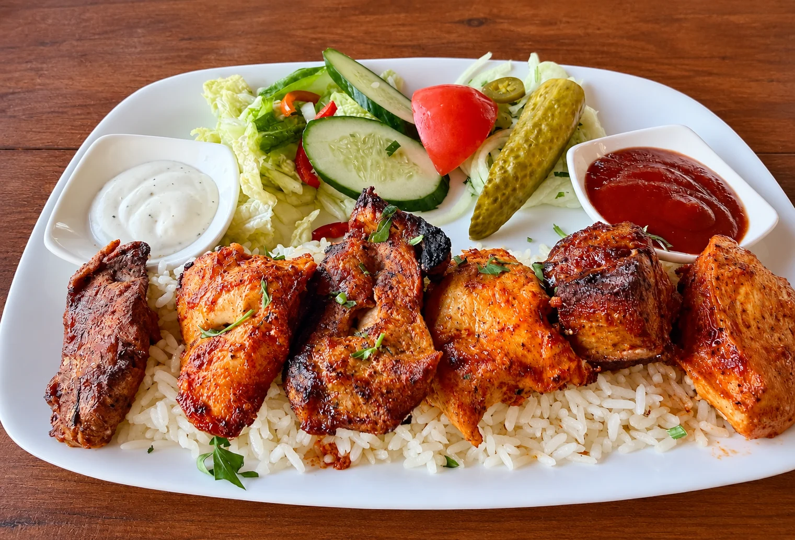
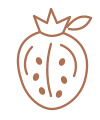
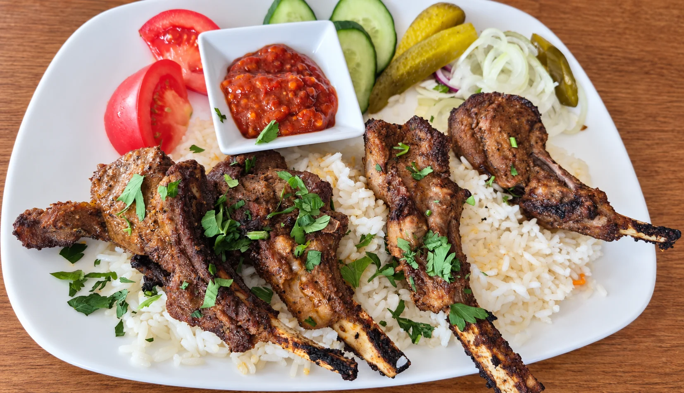
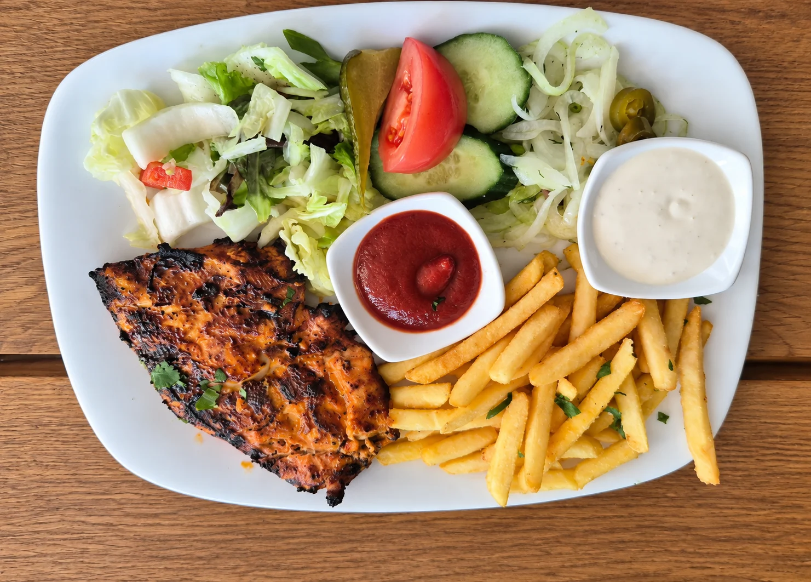
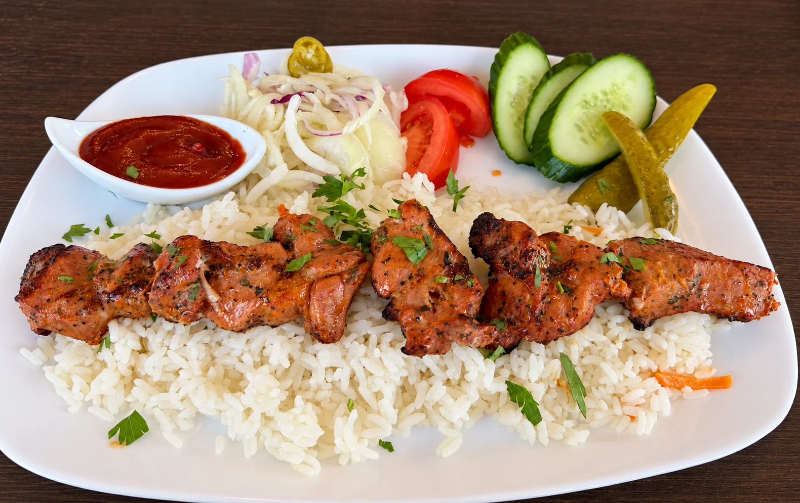
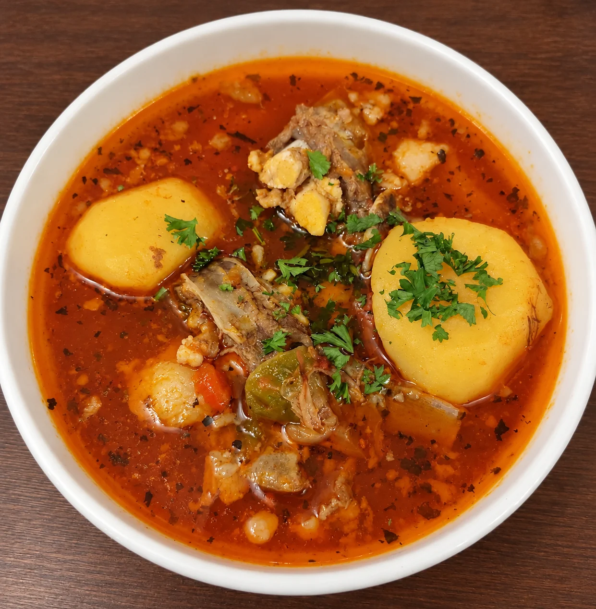
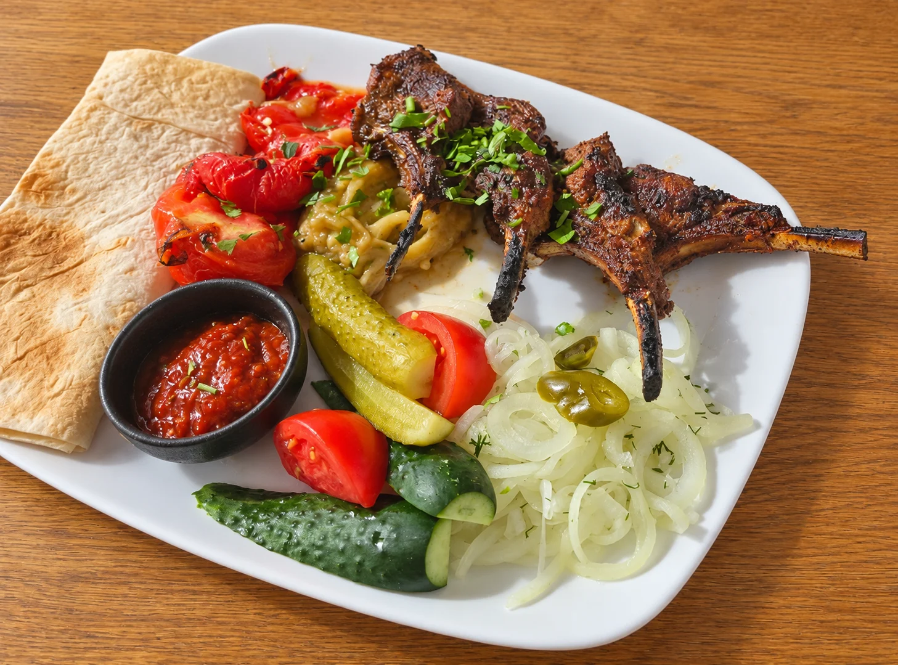
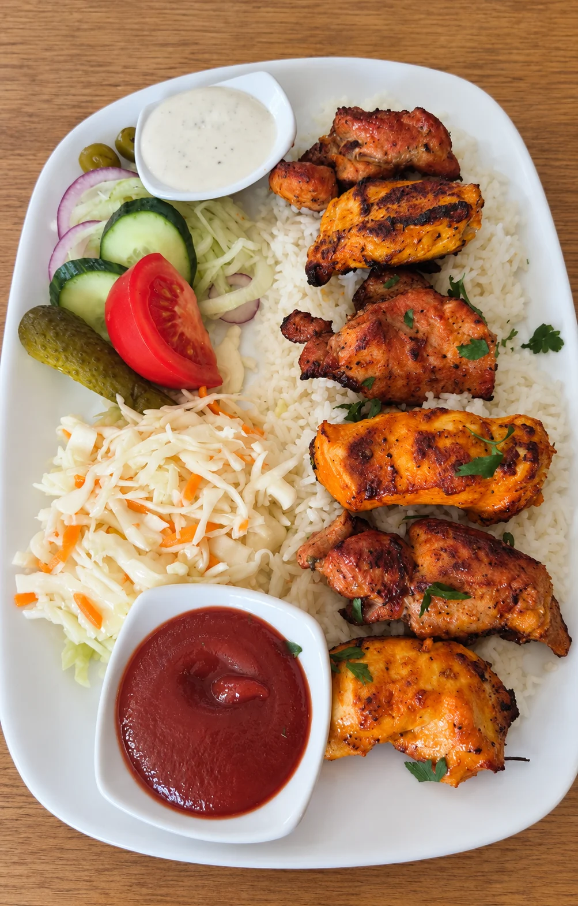
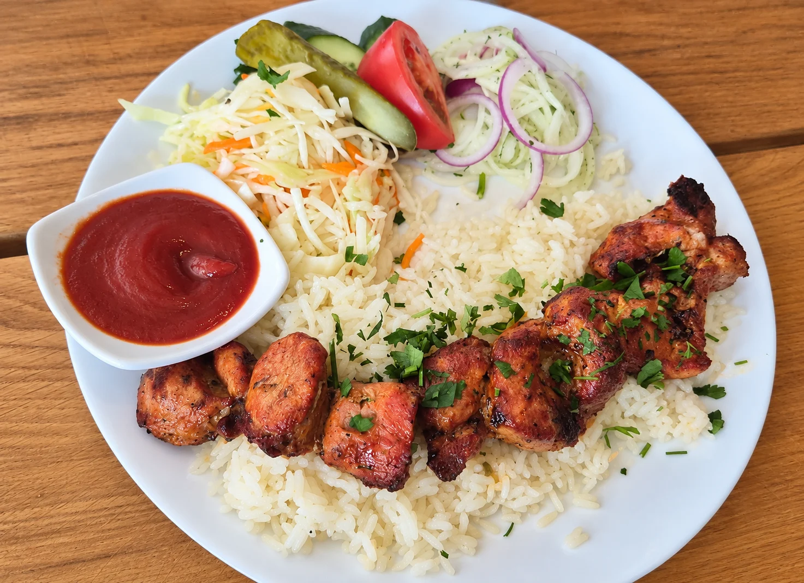

Kaukazietiška virtuvė · Kaunas
Kai norisi tikrolaužo skonio.
Ant laužo kepti šašlykai ir kaukazietiškos virtuvės skoniai Kaune. Užsukite pietų ar vakarienės su savais.

Kaukazietiška virtuvėKaunasSenasis Jerevanas
Apie mus

Skoniai prie bendro stalo.
Bačkonių gatvėje įsikūrusiame „Senajame Jerevane“ ruošiame kaukazietiškus patiekalus ir ant laužo kepame šašlykus – kviečiame užsukti pavalgyti ir pasimėgauti laiku prie bendro stalo.
Senasis Jerevanas iš arčiau
Iš mūsų virtuvės.






